Paseos Perros
· servicio de recreación y cuidado de animales ·


 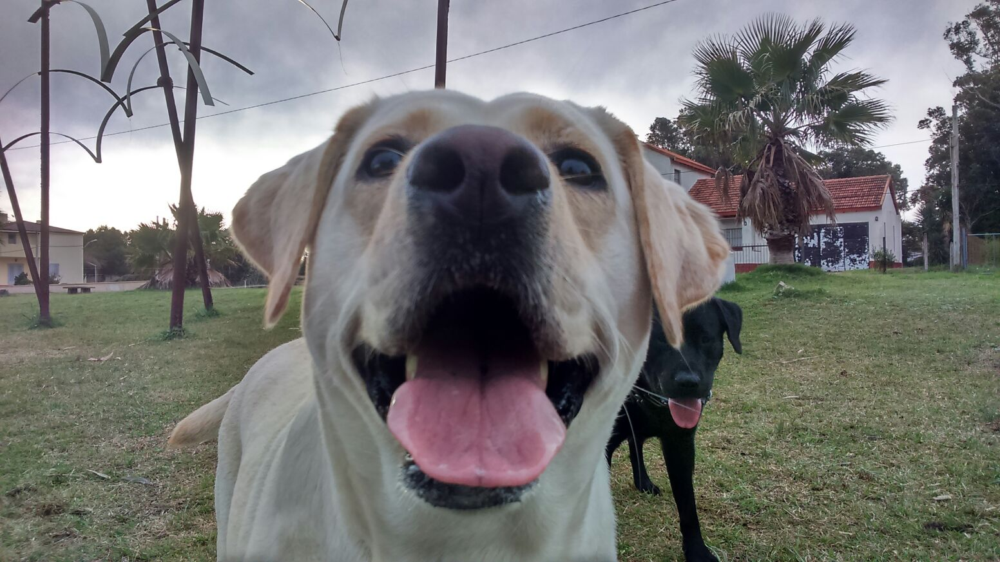
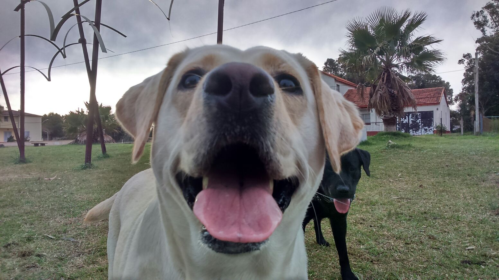

 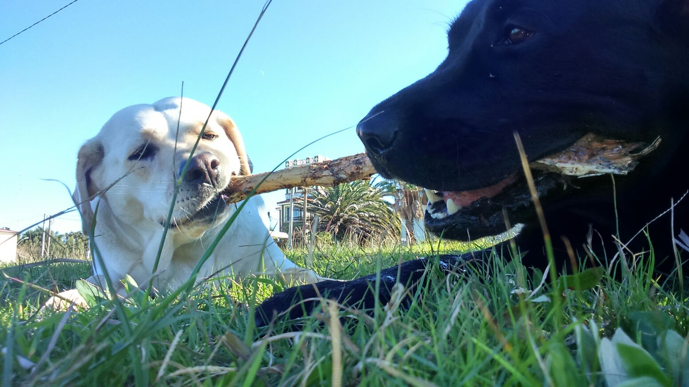
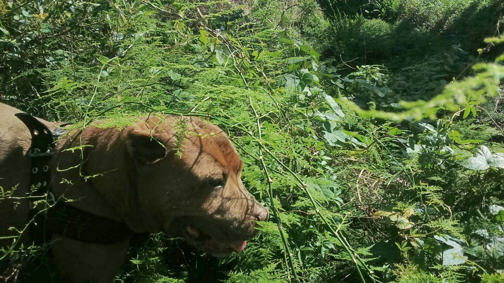
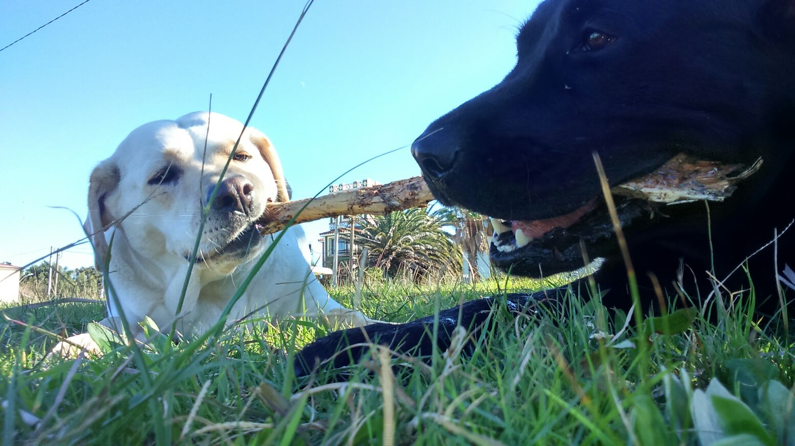
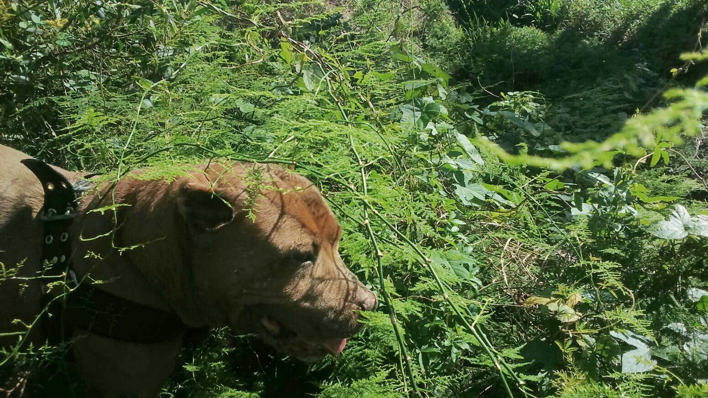
 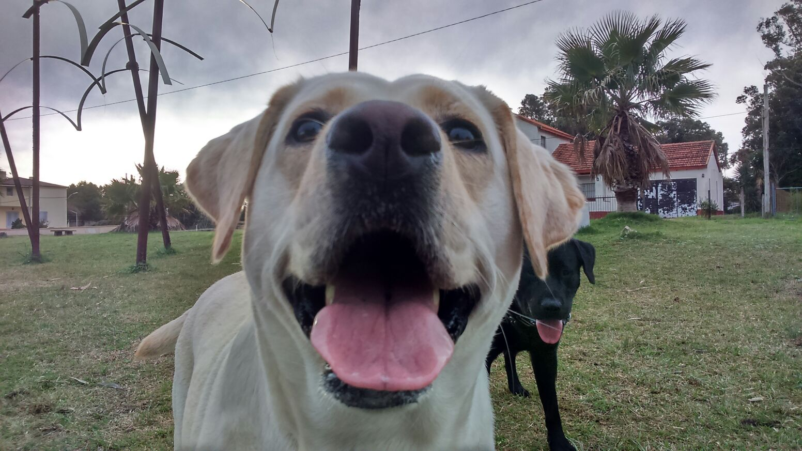
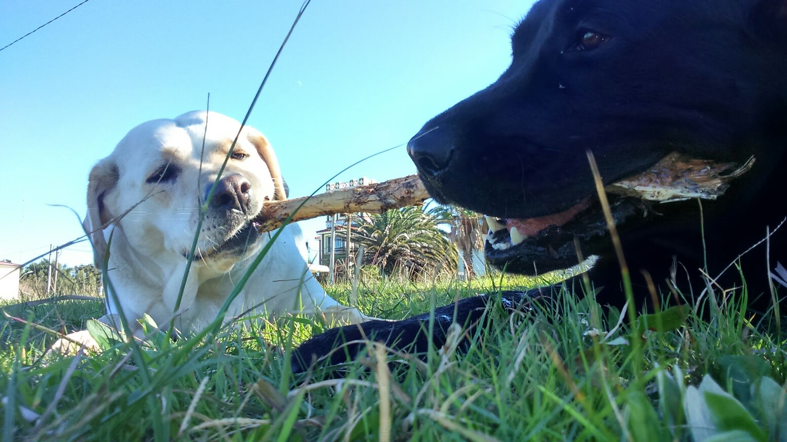
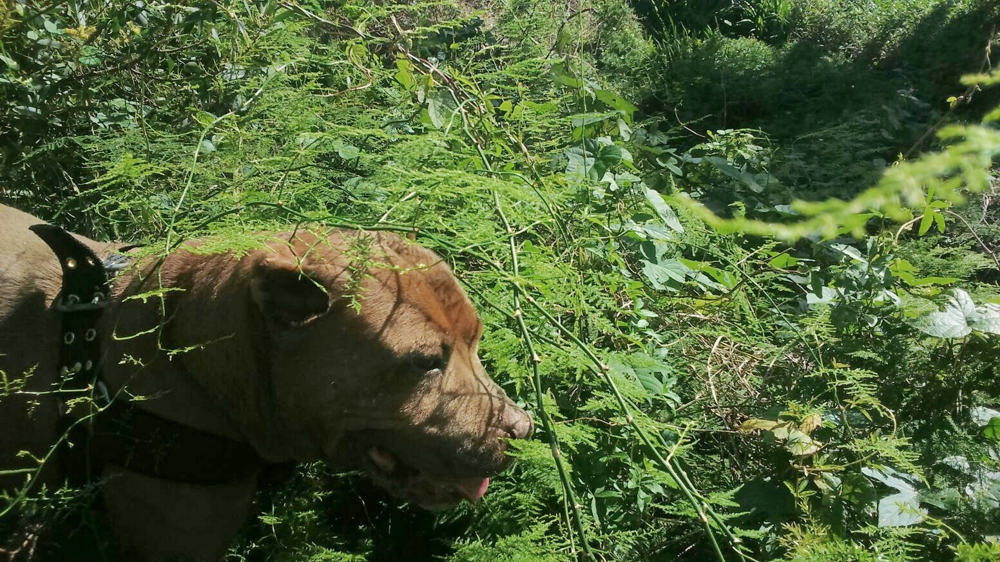
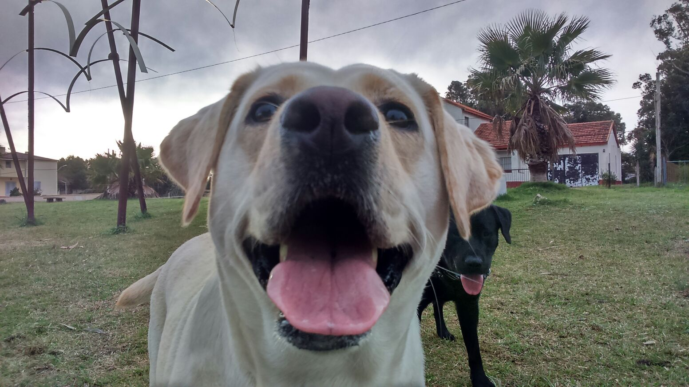
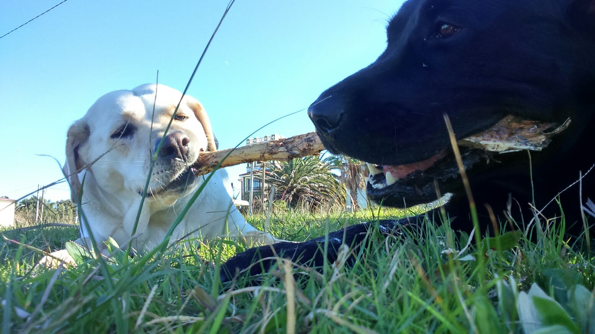
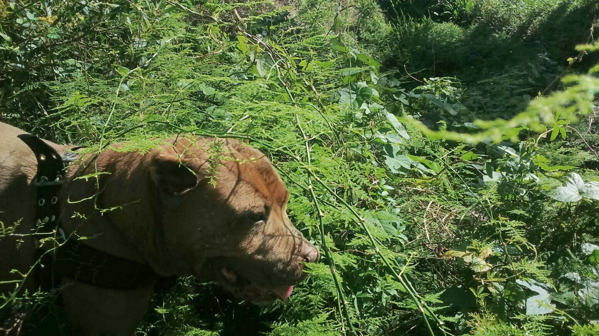
Brindamos servicio de recreación y cuidado de animales en la zona de La Floresta.
Las rutas de los paseos son muy variadas, a lo largo de la rambla de Floresta o por la playa fuera de temporada de baños. Los parques de recreación y descanso son por ejemplo, el parque del Club Tiburón, el monumento a Miguel Perea frente al hotel Floresta, en el mirador donde se encuentra la escultura de "los vuelos del viento", entre otros.
Por supuesto que todas las salidas y actividades pueden seguirse por las redes sociales o por mensajes privados a través de whatsapp.